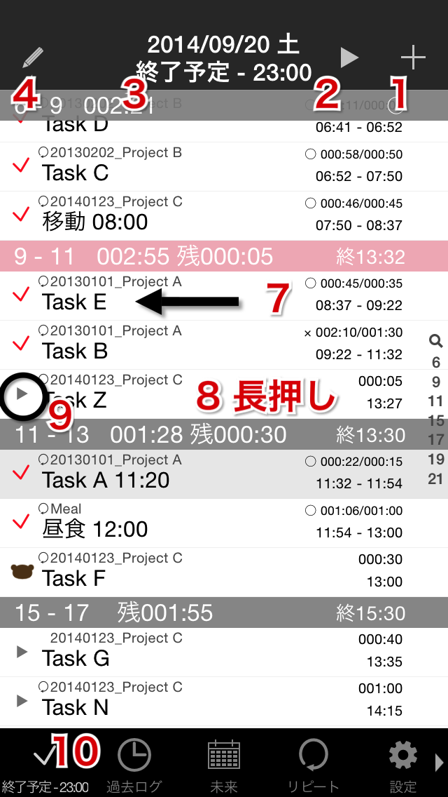

メインタブ(End-xx:xx)
メインリスト画面

- 新規タスク追加
- 新規タスク開始
- アクティブタスクに
- メモ追加：シングルタップ
- 4sq チェックイン追加：ダブルタップ
- 編集モード切替
- タスク並べ替え
- →タスク一括追加
- プロジェクト一括変更
- セクション一括変更
- 日付一括変更
- →タスク詳細：行選択
- →チェックリスト：行ダブルタップ
※チェック項目がある場合、行の背景色グレー
- タスク削除：行スワイプ
- 開始時刻編集：行長押し
- アクティブタスクに
- 画像メモ追加（カメラ起動）：タブシングルタップ
- その他メニュー：タブダブルタップ
- Last Photo Taken（画像メモ追加 最新の写真）
- Choose From Album（画像メモ追加 アルバムから選択）
- Scroll to the Task（アクティブタスクへスクロール）
- 検索
- Active（実行中タスク・タスク名検索）
- Unexecuted（未実行タスク・タスク名検索）
- Project（プロジェクト名検索）
- Tag（タグ名検索）
※カンマ区切りでand検索可
- Task（タスク名検索）
→Help Topへ →Taskuma Topへ